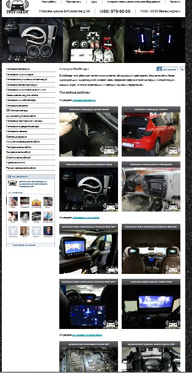
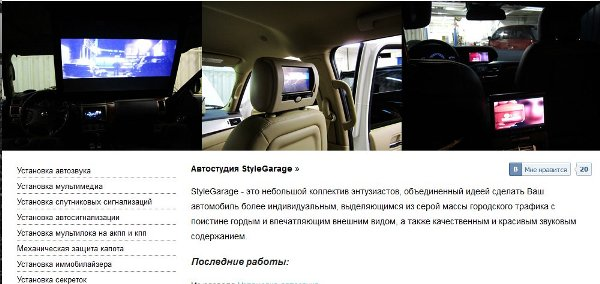
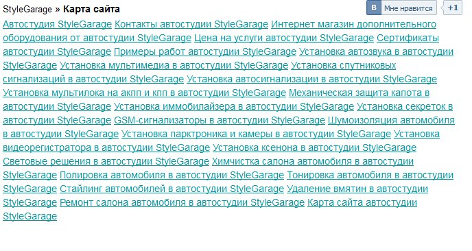
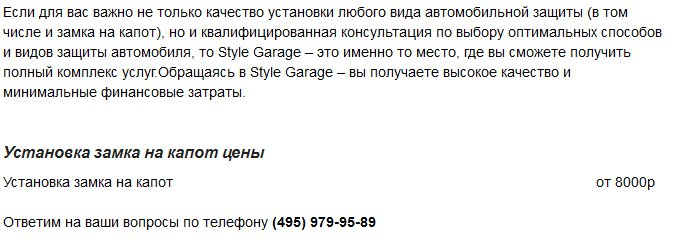

Меню
Итак, открываем указанный сайт. Что первое бросается в глаза? Это безумно длинная страница. Просто огромная. Смотрите, я максимально уменьшил страницу (это 10% от обычного размера), и на экран помещается только 1/4 всей страницы.

Это в корне неверно. Незачем вываливать на пользователя все ваши работы. Покажите 2-3 самые приятные и раскрывающие суть ваших услуг.
Пользователь должен захотеть идти по сайту дальше, а не листать 10 экранов главной страницы. Если мы внимательно изучим первый экран (где пользователь сосредотачивает от 70 до 90% всего своего внимания), то что вот что мы тут обнаружим:

1. Очень темные картинки. Идея неплохая, я бы даже сказал – правильная. Но реализация – ужасная. Во-первых они постоянно крутяться, и через несколько минут начинает кружиться голова. Во-вторых, если что-то понравилось, нельзя остановить и рассмотреть – оно уезжает. В-третьих, на картинки хочется нажать – чтоб попасть на страницу, где можно было бы почитать более конкретно. Ну и, конечно, качество картинок не очень. Я понимаю, что их делали сами сотрудники. Но для рекламы, все же следует пригласить профессионала, чтоб фото были такие, чтоб сразу захотелось кликать и заказывать… а не просто, чтоб было…
2.Текст справа неплохой, задумка правильная, но ее надо развивать. Суть сайта не просто в том, что вы устанавливаете мультимедию и звук, а именно в том, что нужно выделить автомобиль из толпы. Увы, этот текст никак не связан с сайтом.. Весь сайт следует сделать в соответствии с таким порывом. Например, пункты меню слева очень скучные и однообразные (почти везде есть слово Установка). Почему бы перед названием не сделать небольшую иконку, что каждый пункт обозначает?
3. Мне кажется, что на главной надо выводить не последние работы, а случайные. Причем, выводить надо лучшие – те, где хорошие фото и разнообразие.
4. Еще одна мелочь, которая совсем не мелочь. Скажите, что тут делает кнопка контакта «Мне нравиться»?. Представляем себе ситуацию – пользователь только что попал на сайт, увидел шапку. И сразу же ему предлагается нажать что-то и послать себе на стену. Следует изучить глубинное значение этой кнопки. Раньше, до контакта и тому подобное, пользователи сохраняли ссылки у себя где-то в блокноте, затем отправляли друзьям по почте или кидали в скайп/аську. Сейчас это все намного проще, нажал одну кнопку, и все твои друзья смогут ее увидеть у вас на стене в соц сети. Но вопрос – станете ли вы показывать ссылку сайта, на который только что попали? ССылку, на которой, по сути, почти ничего нет? Что рекомендовать? Шапку? Такие ссылки разумно ставить внизу страницы со статьей или чем-то полезным/интересным. Но никак не на главной. Я не случайно так подробно остановился на этой кнопке. Она демонстрирует отношение к пользователям. Просто получается, что кнопку ставят просто, потому что это можно, это круто, и потому что так делают все. Но совершенно не задумываются о ее практическом применении и ценности. Как и 10 экранов на главной странице.
Такие ссылки разумно ставить внизу страницы со статьей или чем-то полезным/интересным. Но никак не на главной.

Мне кажется, она требует существенной переработки. Что касается внутренних информационных страниц – тут тоже есть над чем поработать. Например, вот – один сплошной текст. Еще раз повторю – вы продаете не просто сигнализацию или мультимедию. Вы продаете человеку ощущение особенности, чувство того, что он не такой как все. Так покажите это!

Ну и конечно, оформление цены, выглядит очень несолидно… Вобщем, над сайтом есть где работать (уберите неработающий интернет-магазин. Когда заработает – тогда и поставите ссылку, а пока пусть будет то, что работает). И думайте с точки зрения пользователя, что он хотел бы увидеть на вашем сайте? Что бы хотел почитать? на что обратил бы внимание?